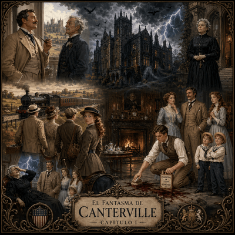

Capítulo 1
Capítulo I
Cuando Hiram B. Otis, el ministro estadounidense, compró la casa llamada Canterville Chase, la gente le dijo que estaba haciendo algo muy peligroso. Todos sabían que la casa estaba embrujada. Lord Canterville, en persona, le contó todo al Sr. Otis.
—Incluso nosotros mismos nos hemos resistido a vivir en esta casa —dijo—. Muchas personas de mi familia han visto al fantasma. La abuela de mi esposa, la duquesa de Bolton, es una de ellas. Por la noche, mientras se vestía para la cena, le pusieron dos manos de esqueleto sobre los hombros. Ha estado enferma durante años debido a eso, y mi esposa nunca durmió allí, a causa de todos los ruidos que se oyen durante la noche.
—Lord Canterville —respondió el Sr. Otis—, compraré tanto la casa como al fantasma. Vengo de Estados Unidos, un país moderno donde podemos comprar casi todo. Pero allí no hay fantasmas. Así que, si realmente hay un fantasma en la casa, podemos enviarlo a Estados Unidos y la gente pagará para ir a verlo.
—Me temo que la casa realmente tiene un fantasma —dijo Lord Canterville sonriendo—, tal vez no haya fantasmas en su país, pero nuestro fantasma ha estado en la casa durante 300 años, y siempre aparece antes de la muerte de uno de los miembros de la familia.
—Bueno, eso también lo hacen los médicos de familia, Lord Canterville. Pero no hay fantasmas, señor, en ningún país, ni siquiera entre las famosas familias británicas antiguas.
—Muy bien —dijo Lord Canterville—, si está feliz de tener un fantasma en la casa, está bien; pero, por favor, recuerde que le conté sobre él.
Así fue que el Sr. Hiram B. Otis compró la casa y, unas semanas más tarde, él y su familia fueron a Canterville Chase en tren. La Sra. Otis era una mujer muy hermosa que parecía tan inglesa como cualquier mujer inglesa. Los estadounidenses no son realmente diferentes de los ingleses, pero, por supuesto, hablan una lengua diferente. Su hijo mayor, Washington, era un joven guapo con una sonrisa maravillosa; era famoso en todas las fiestas de Londres por ser un bailarín excepcional.
La señorita Virginia E. Otis era una dulce niña de quince años, con grandes ojos azules, a quien le encantaba montar a caballo, y podía hacerlo más rápido que muchos hombres. Sus habilidades llamaban tanto la atención que, cierta vez, el joven duque de Cheshire, al verla en su caballo, en un rapto de entusiasmo le pidió que se casara con él, por lo que su familia decidió enviarlo de regreso a la escuela al día siguiente. Le seguían a Virginia los gemelos, dos niños felices y ruidosos que siempre estaban riendo y haciendo travesuras.
Era una hermosa tarde de julio cuando la familia se bajó del tren, los campos y los árboles se veían maravillosos bajo el sol dorado, los pájaros cantaban dulcemente y el cielo era de un azul brillante. Sin embargo, ni bien llegaron a Canterville Chase, el cielo se cubrió repentinamente de nubes. Un extraño silencio pareció invadir toda la atmósfera, una gran bandada de pájaros negros cruzó calladamente por encima de sus cabezas, y antes de que llegasen a la casa ya habían caído algunas gotas.
Una mujer de vestido negro permanecía de pie en la puerta de la casa, esperando para recibirlos: era la Sra. Umney, el ama de llaves.
—Bienvenidos a Canterville Chase —dijo.
La siguieron a la biblioteca, una habitación larga y oscura con una ventana alta en un extremo. Allí estaba listo el té, por lo que se quitaron los abrigos y se sentaron, mientras miraban a su alrededor. De repente, la Sra. Otis vio una mancha roja oscura en el suelo, cerca de la chimenea.
—¿Es una mancha en el piso la que veo allí? —preguntó.
—Sí, Sra. Otis —dijo la Sra. Umney en voz baja—. Es una mancha de sangre.
—Oh, eso es terrible —exclamó la Sra. Otis—, no puedo tener manchas de sangre en mis pisos. Debe irse.
La anciana sonrió y nuevamente respondió en voz baja:
—Es la sangre de Lady Eleanore de Canterville. Su esposo, Sir Simon de Canterville, la asesinó en 1575 cuando ella estaba parada allí en ese lugar. Él vivió nueve años más después de su muerte, pero luego desapareció de manera muy extraña —hizo una pausa y continuó—: nadie encontró su cuerpo, pero su fantasma todavía está en la casa y no desaparecerá. La mancha de sangre es famosa, los visitantes vienen aquí especialmente para verla. La gente ha tratado de limpiarla, pero no se irá jamás.
—Por supuesto que lo hará —gritó Washington Otis—. El famoso quitamanchas Pinkerton lo limpiará en un abrir y cerrar de ojos.
Antes de que el ama de llaves pudiera detenerlo, estaba limpiando el piso con una barrita negra; un minuto después la mancha de sangre había desaparecido.
—¡Ahí está! —dijo sonriendo a los demás—. Pinkerton puede limpiar cualquier cosa.
Pero apenas pronunció esas palabras, afuera se desató la tormenta. Un terrible relámpago iluminó la habitación y, un segundo después, llegó un gran estrépito de truenos. Todos se sobresaltaron con el sonido del trueno, menos la Sra. Umney, que se desmayó.
—¡Qué terrible este clima! —exclamó el Sr. Otis. Se sentó de nuevo y encendió un cigarrillo. La Sra. Umney yacía en el suelo con los ojos cerrados. La Sra. Otis la miró.
—Mi querido Hiram, ¿qué podemos hacer con una mujer que se desmaya?
—Dile que tiene que pagar —dijo el Sr. Otis— si rompe una taza o algo así. No se desmayará nunca más después de eso.
Efectivamente, la Sra. Umney se sentó de inmediato, aunque parecía muy infeliz.
—Tenga cuidado, los problemas se avecinan en esta casa —dijo con la voz temblorosa—, he visto cosas aquí que son demasiado terribles. Noche tras noche no he pegado un ojo.
El Sr. Otis le dedicó una cálida sonrisa:
—Mi esposa y yo no tenemos miedo a los fantasmas.
La vieja ama de llaves se puso de pie temblorosamente:
—Ustedes, los estadounidenses, son tan fuertes y tan amables. Sabe que he trabajado aquí durante muchos, muchos años con el mismo sueldo.
—Está bien, Sra. Umney, le pagaremos más dinero —dijo el Sr. Otis todavía sonriendo.
—Oh, gracias, querido Sr. Otis y querida Sra. Otis, muchas gracias.
Análisis
Inicio y Estructura
Inicio y Estructura: El relato nace de una acción directa: la compra de Canterville Chase por parte de Hiram B. Otis. Este inicio dinámico capta el interés del lector al presentar inmediatamente el conflicto entre el comprador y la advertencia sobre el fantasma. El orden de la narración es predominantemente cronológico, aunque incluye saltos al pasado (analepsis) a través del relato de Lord Canterville y la Sra. Umney para explicar el origen del maleficio y la mancha de sangre.a.
Voz narrativa
Voz Narrativa: El relato presenta un narrador externo y omnisciente que utiliza la tercera persona gramatical. Este narrador posee un nivel de información total: no solo conoce los hechos presentes (la compra de la casa, el viaje), sino también el pasado (la historia de Sir Simon de 1575) y los sentimientos o pensamientos íntimos de los personajes, como el "rapto de entusiasmo" del duque de Cheshire. Al saber más que los personajes y el lector, este tipo de narrador genera un efecto de objetividad y autoridad sobre el mundo ficticio, permitiendo al lector observar la incredulidad de los Otis frente a la seriedad de Lord Canterville.
Construcción del Personaje
Climas y Percepciones Sensoriales
Climas y Percepciones Sensoriales: El texto construye atmósferas contrastantes mediante recursos sensoriales precisos. Al inicio, predomina lo visual y auditivo agradable: "sol dorado", "pájaros cantaban dulcemente", "cielo de un azul brillante". Sin embargo, el clima cambia hacia lo inquietante con recursos como la visión de una "mancha roja oscura" y una "bandada de pájaros negros", junto a percepciones táctiles y auditivas que generan tensión: la sensación del frío de "dos manos de esqueleto", el "extraño silencio" y, finalmente, el "gran estrépito de truenos" y el "terrible relámpago" que reflejan físicamente la ruptura de la calma.
Recursos de Cohesión
Recursos de Cohesión: Se observa un uso preciso de la referencia mediante pronombres para evitar repeticiones (por ejemplo, "la siguieron a la biblioteca", donde "la" refiere a la Sra. Umney). Los conectores temporales como "unas semanas más tarde", "de repente" y "antes de que" organizan la secuencia de eventos. Asimismo, se utiliza la cohesión léxica a través de campos semánticos vinculados al género gótico (fantasma, embrujada, esqueleto, sangre, asesinato) que dan unidad temática al texto.
Gramática y Verbos del Decir
Gramática y Verbos del Decir: El texto emplea el Pretérito Perfecto Simple para las acciones puntuales que hacen avanzar la historia ("compró", "llegaron", "se desmayó") y el Pretérito Imperfecto para las descripciones de personajes y del marco ambiental ("era una mujer hermosa", "el cielo se cubría"). Se destaca una gran variedad de verbos declarativos (dicendi) como "contó", "respondió", "gritó", "exclamó" y "aseguró", que aportan verosimilitud a los diálogos y matizan la actitud de cada personaje al hablar.
Puntuación y Normativa
Puntuación y Normativa: El diálogo está estructurado mediante el uso de la raya de diálogo para marcar el inicio de los parlamentos y los dos puntos después de los verbos declarativos cuando estos introducen el discurso directo. El texto está organizado en párrafos que funcionan como unidades de significación: cada uno marca una transición, ya sea el cambio de escenario (de la estación a la casa) o la introducción de un nuevo tema de conversación (la mancha de sangre).
Campos semánticos
Sobrenatural y el Terror
1. Campo semántico de lo Sobrenatural y el Terror (Tradición Británica)
Este campo construye la atmósfera de misterio y miedo asociada a la aristocracia y la historia de la casa.
Sustantivos: Fantasma, embrujada, esqueleto, manos, ruidos, muerte, sangre, asesinato, trueno, relámpago, tormenta, sombras (implícitas en la oscuridad de la biblioteca).
Adjetivos: Peligroso, terrible, extraño, infeliz, temblorosa, antigua, oscura.
Verbos: Morir, desaparecer, desmayarse, asustar, asesinar.
Modernidad y Pragmatismo
2. Campo semántico de la Modernidad y el Pragmatismo (Cultura Estadounidense)
Representa la visión de la familia Otis, quienes ven el mundo a través del comercio, la ciencia y la utilidad.
Sustantivos: Ministro, Estados Unidos, país moderno, comprar, dinero, precio, quitamanchas (Pinkerton), barrita negra, tren, bailarín, escuela.
Adjetivos: Moderno, famoso, excepcional, guapo, fuerte, amable, rápido.
Verbos: Comprar, pagar, limpiar, enviar, vender.
Naturaleza y el Paisaje
3. Campo semántico de la Naturaleza y el Paisaje
Se utiliza para marcar el contraste entre la llegada idílica y el presagio de los problemas.
Términos positivos: Sol dorado, campos, árboles, pájaros (cantando dulcemente), cielo azul brillante, tarde de julio.
Términos negativos (Presagio): Nubes, pájaros negros, silencio, gotas de lluvia, oscuridad.

Escritura
Punto de vista del fantasma
1. Cambio de Narrador: El punto de vista del fantasma
Consigna: El texto original tiene un narrador omnisciente que ve todo desde afuera. Reescribí el fragmento donde la familia Otis llega a la casa y Washington limpia la mancha, pero esta vez desde la voz protagonista del Fantasma de Canterville.
Andamiaje: Recordá que, como narrador protagonista, debés usar la primera persona (“yo”). Expresá qué sintió el fantasma al ver que un joven borraba su "famosa" mancha de sangre con un producto de limpieza. ¿Sintió indignación, sorpresa o miedo?
El gemelo número tres
2. Construcción de Personaje: El gemelo número tres
Consigna: En el texto se menciona que a Virginia le siguen "los gemelos, dos niños felices y ruidosos". Imaginá que existe un tercer hermano que el narrador olvidó mencionar.
Andamiaje: Creá este personaje como una síntesis de la realidad. Dale un nombre, describí qué dice, qué hace y qué piensa (recursos de caracterización). Escribí un párrafo breve donde este nuevo personaje reaccione de forma distinta a su familia ante el desmayo de la Sra. Umney.
Inicio descriptivo
3. Reescritura: Un inicio descriptivo
Consigna: El relato original nace de una acción (la compra de la casa). Tu tarea es reescribir el comienzo del capítulo transformándolo en un inicio descriptivo.
Andamiaje: Debés comenzar describiendo la atmósfera de Canterville Chase (el edificio, los muebles oscuros, el polvo, los retratos antiguos) para generar un clima de misterio antes de que aparezca el primer diálogo o acción. No olvides usar recursos de percepción sensorial (lo que se ve, se huele o se siente al tocar las paredes).
La tormenta en la biblioteca
4. Producción por Percepciones: La tormenta en la biblioteca
Consigna: Ampliá la escena de la tormenta que se desata cuando Washington limpia la mancha. El texto dice: "Un terrible relámpago iluminó la habitación... llegó un gran estrépito de truenos".
Andamiaje: Agregá detalles táctiles (el frío repentino), auditivos (el crujir de la madera o el viento) y visuales (el movimiento de las sombras en la biblioteca oscura) para que el lector pueda percibir físicamente el entorno.
El descargo de la Sra. Umney
5. Gramática en Acción: El descargo de la Sra. Umney
Consigna: La Sra. Umney dice haber visto cosas "demasiado terribles" durante años. Escribí una carta que ella le envía a un familiar contándole un suceso paranormal que vivió antes de que llegaran los Otis.
Andamiaje: Prestá atención al uso de los tiempos del pasado. Usá el Pretérito Imperfecto para describir cómo era la situación y el marco ("Hacía mucho frío", "El fantasma caminaba siempre por el pasillo"), y el Pretérito Perfecto Simple para las acciones centrales del suceso ("De pronto, el candelabro se cayó", "Escuché un grito").